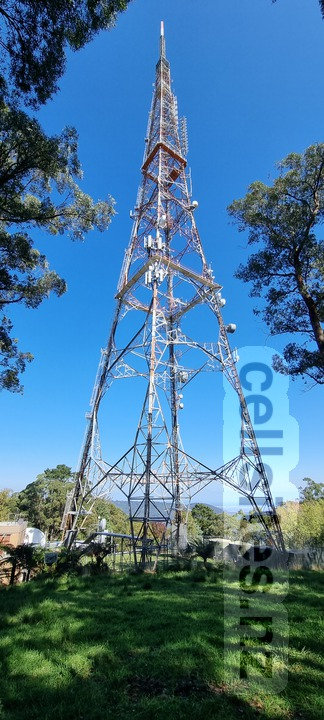
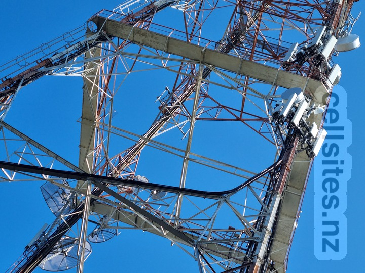
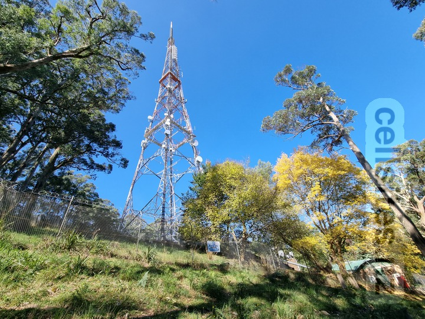
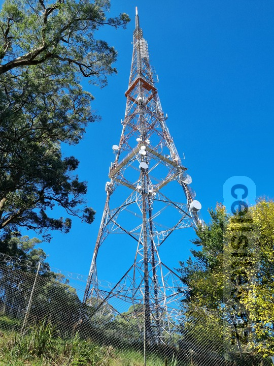
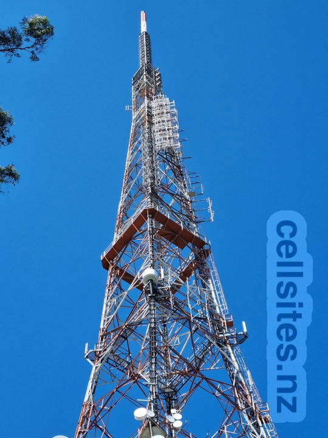
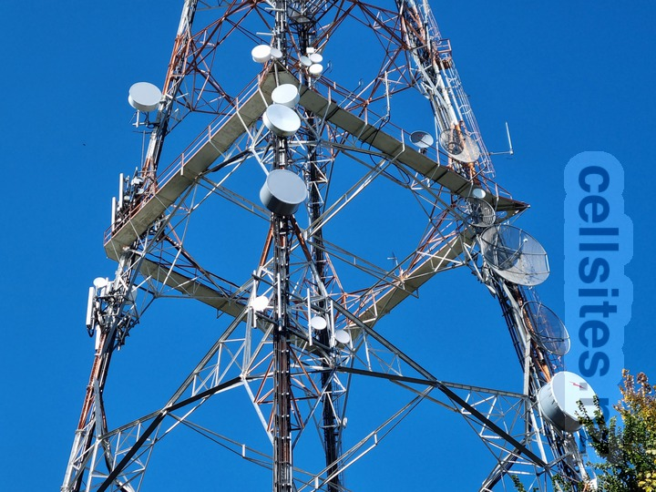
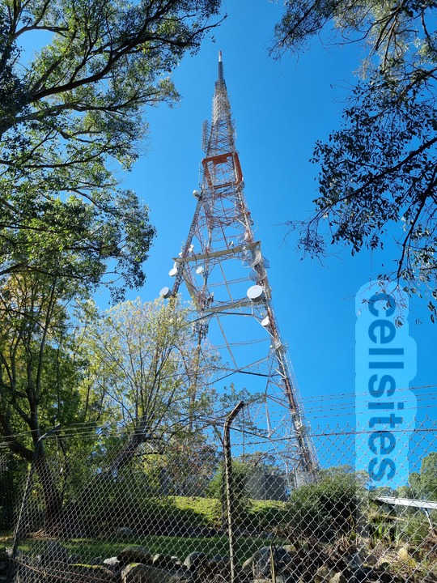
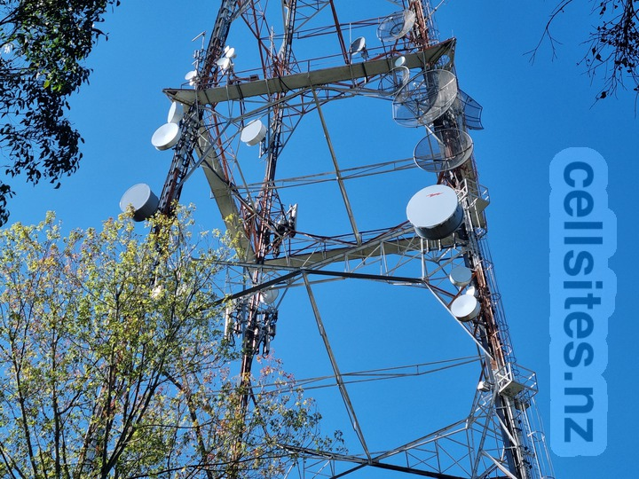
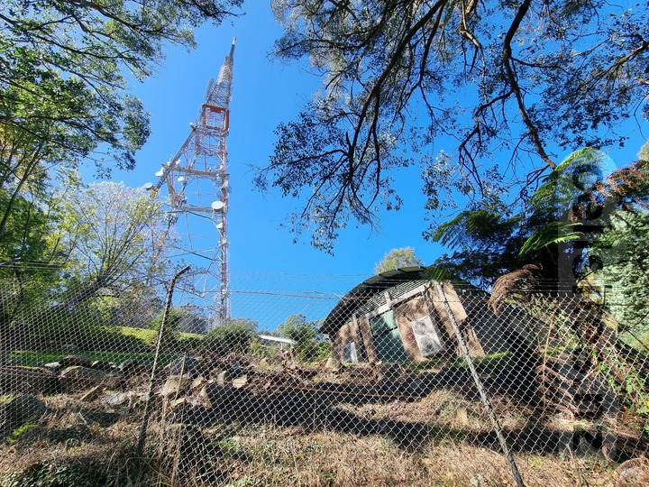
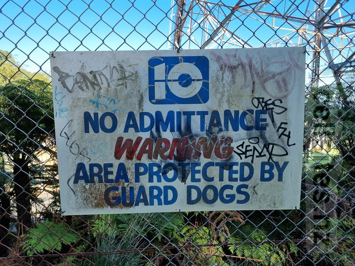

An overview of the north-eastern corner of the mast. If you arrive at this site by road and walk from the carpark at the end of Eyre Road this is the view you will see first. The two mobile phone antenna arrays can be found approx one-third up the mast.

The Optus/Vodafone antenna array can be found near the top-right corner.
The Telstra antenna array can be found below the Optus/Vodafone array.
There is also a lone antenna near the the bottom-left corner, which seems to belong to Telstra.

An overview of the north-western corner of the mast including some of the surrounding enviornment. The two mobile phone antenna arrays can be found on the left-hand side.

An overview of the north-western corner of the mast focused on the mast itself. The two mobile phone antenna arrays can be found on the left-hand side.

A close-up of the north-western corner focusing on the top half of the mast. The mobile phone antenna arrays are not visible. However the television and radio antennas arrays can be more clearly seen. Some of the arrays are only on the side of the mast facing Melbourne city.

Another close-up of the north-western corner focusing on the bottom half of the mast. The mobile phone antenna arrays are visible on the left-hand side.

An overview of the south-western corner of the mast. The two mobile phone antenna arrays are on the other side.

An close-up of the south-western corner focusing on the mobile phone antenna arrays on the leg furthest away.

An overview of the south-western corner of the mast from further down the hill. The mobile phone antennas are on the other side, nearly obscured by trees.

An antiquated sign for Channel Ten. My research suggests they stopped using this logo in 1984—nearly 40 years prior to this photo being taken! Also, of amusing interest is the statement regarding guard dogs—they must have been off-duty the day I visited.